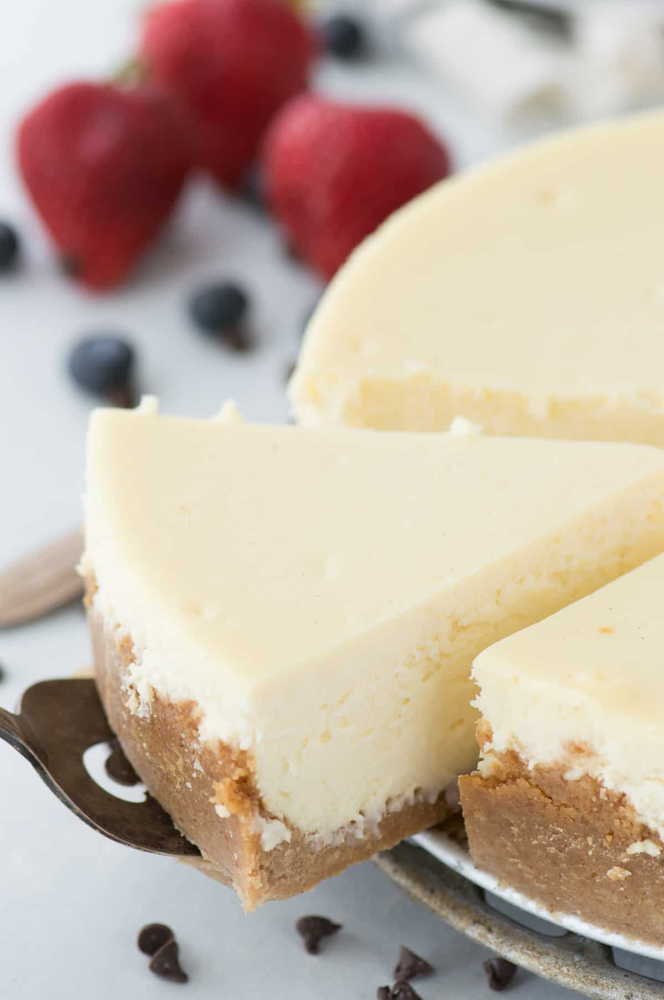

Classic Cheesecake
February 24, 2020 by Beth @ The First Year
The best classic cheesecake recipe with a graham cracker crust. Impress guests every time you make
this original
cheesecake recipe with our step by step recipe of how to bake a cheesecake in a water bath.
I like to think that I am making up for lost cheesecake time. When I was little I didn't like
cheesecake because I thought there was actual cheese inside and I didn't like cheese, which is
a shocker because I thought all kids LOVED cheese.
There are quite a few cheesecake recipes on our blog, but there hasn't been a classic cheesecake
recipe until now! Granted, I like my cheesecake loaded with extra stuff and flavors, but I am totally
okay with plain cheesecake if it's covered in chocolate.
Here is our classic plain cheesecake recipe. We're giving you all the tips so it turns out
perfectly!
How to Make Graham Cracker Crust for Cheesecake
4 ingredients graham cracker crust
graham cracker crumbs: did you know you can buy a box of graham cracker crumbs in the baking aisle
of your grocery store? They are usually near the pre-made graham cracker pie crusts. I love using
the store bought graham cracker crumbs because it saves times!
brown sugar: adds a deep rich flavor to the crust and helps to bind the crumbs and butter together
cinnamon: adds a little warmth and spice without being overwhelming
butter: this most crucial ingredient in binding the crust together
Mix all the crust ingredients together and then firmly press the crust into the bottom and up the
sides of a springform pan.
Use the bottom of a measuring cup or bottom of a glass cup to help pack the crust.
How to Make Plain Cheesecake

Our classic cheesecake recipe only calls for 4 ingredients!
cream cheese: use three 8 oz packages. Be sure to use full fat, not low fat, cream cheese for best
results.
sugar: helps to balance the tanginess of the cream cheese.
vanilla extract: just a teaspoon, but it enhances the flavor.
eggs: eggs are the last ingredient that get mixed into the cheesecake batter. Be sure to mix them
in, one at a time, just until the yolk breaks. Over beating the eggs is the number one cause of air
bubbles and cracking.
How to Make the Perfect Classic Cheesecake
Every single cheesecake recipe I have on my site, I include two critical tips. Here are the 2 most
important details to follow when making cheesecake..
1. Don't be afraid of the water bath
2. Don't rush the cooling process
Keep reading below for details on each tip!
How to Make a Cheesecake Water Bath
I know it sounds weird, putting your cheesecake in a water bath, but it's the secret to creating
moist, perfectly baked cheesecake. It's really not scary.
The basics of a water bath: Place a springform pan inside a large cake or roasting pan, fill the
roasting pan with about 1 inch of water and place in the oven.
How to Prevent your Cheesecake Water Bath from Leaking
This is the best trick ever to prevent your cheesecake water bath from leaking and ruining your
cheesecake.
Place the springform pan inside a large oven safe turkey bag or slow cooker liner bag and roll down
the top of the bag so it doesn't cover the cheesecake. If you have a lot of excess bag space, twist
one side tight and knot it so the bag is tight around the pan. Place the springform pan that's
inside the bag in the large roasting pan and fill with water.
The water bath will not leak into your cheesecake!
How to Cool Cheesecake
Remember, don't rush the cooling process.
Once the cheesecake is done baking turn the oven off and gently remove the springform pan from the
water bath and oven safe bag. Place the cheesecake on a baking sheet and return to the oven (oven is
off) with the oven door cracked.
A slow cooling process will help prevent the cheesecake from cracking. Don't forget to refrigerate
your cheesecake over night before serving.